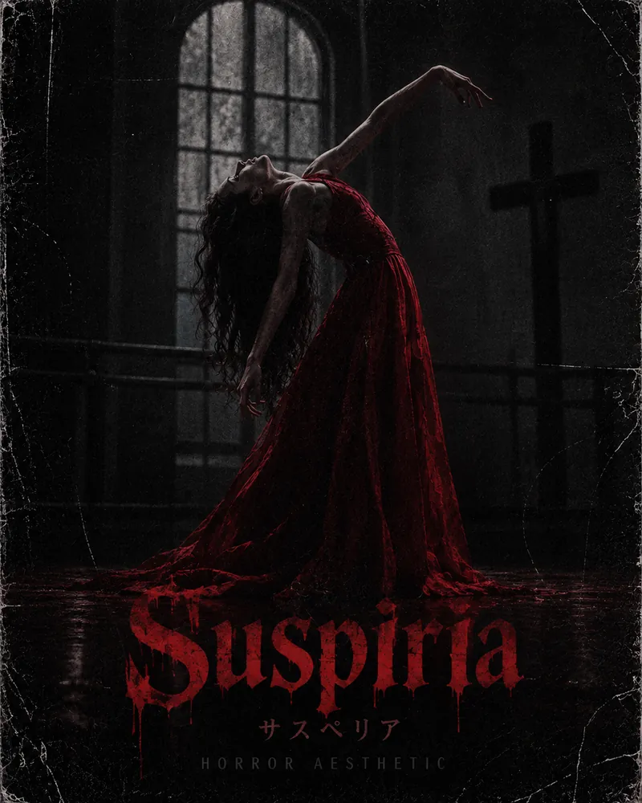
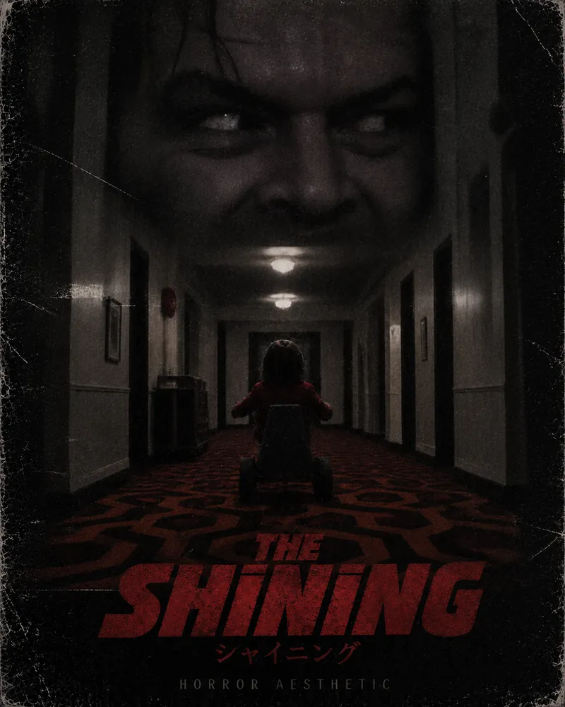
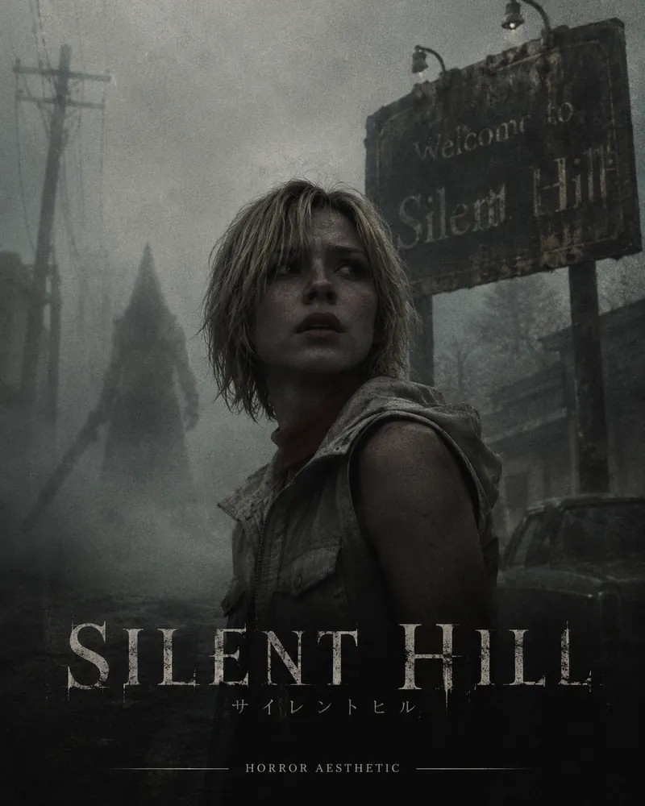

Suspiria
Цвет, звук и архитектура кошмара.
Рецензии и редакционные заметки о фильмах, которые формируют язык ужаса — от классики до современного экстремального кино.

Цвет, звук и архитектура кошмара.

Клаустрофобия и распад восприятия.

Пустой отель как пространство безумия.

Боль, желание и метафизика плоти.
Одиночество, вера и опасная одержимость.

Город, где вина обретает форму.